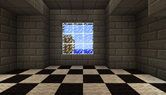
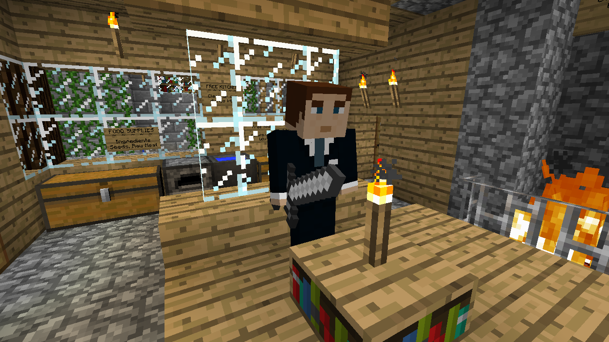
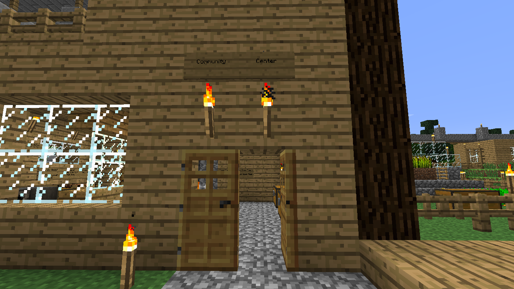

AVAIR
Ars Virtua Artist-in-Residence
We are pleased to award the 2014 residency to the team of Irina Kotyurgina, Alexander Kiryutin, Nikita Rokotyan, Regina Muftakhova, & Zhenya Chaika.
The team has worked with mixed reality constructions in Minecraft and at the 2nd Ural Industrial Biennial of Contemporary Art.
Be sure to check out our last resident Yagiz' video on vimeo: http://vimeo.com/87924918.
Ars Virtua is sponsored by the CADRE Laboratory for New Media, and by New Radio and Performing Arts, Inc. and its Turbulence.org website and in collaboration with the Streaming Museum.
"AVAIR" was originally commissioned in 2006 by New Radio and Performing Arts, Inc., (aka Ether-Ore) for its Turbulence web site.

June 2014-September 2014
Ekaterinburg Team
Thomas Asmuth
Nina Colosi
Bill Cruickshank
G. Craig Hobbs
James Morgan
Yagiz Mungan
Helen Thorington

Ars Virtua is sponsored by the CADRE Laboratory for New Media, Department of Art & Art History at San José State University.
New Radio and Performing Arts, Inc. and its Turbulence.org website
in collaboration with the Streaming Museum
"AVAIR" was originally commissioned in 2006 by New Radio and Performing Arts, Inc., (aka Ether-Ore) for its Turbulence web site. It was made possible with funding from the Jerome Foundation.